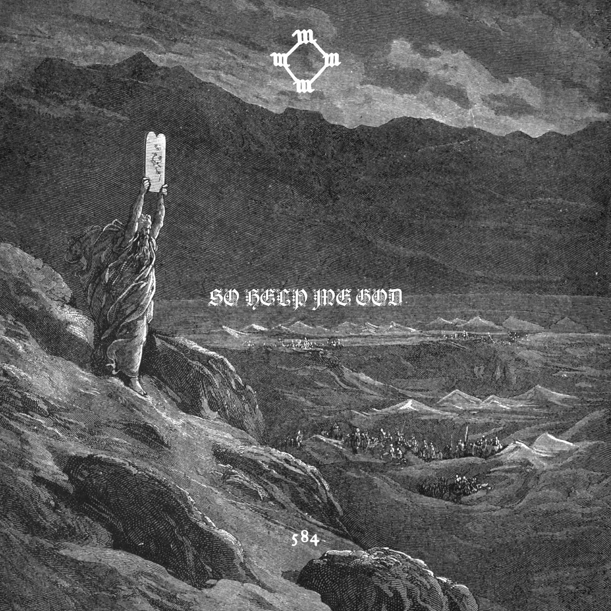

YZY Base
YZY Base to projekt edukacyjny inspirowany twórczością Ye, jego oficjalnymi albumami, niewydanymi projektami oraz estetyką związaną z marką YZY. Strona ma charakter informacyjny i została przygotowana jako ćwiczenie z projektowania nowoczesnych, responsywnych stron internetowych.
Główna strona wprowadza do całego projektu i pokazuje najważniejsze sekcje, a bardziej rozbudowane treści zostały podzielone na osobne podstrony.
O stronie
Strona YZY Base została stworzona jako projekt edukacyjny poświęcony twórczości Ye. Jej głównym celem jest zebranie w jednym miejscu najważniejszych informacji o oficjalnych albumach, niewydanych projektach oraz estetyce wizualnej kojarzonej z YZY.
Projekt łączy temat muzyki, kultury i designu z nauką tworzenia stron internetowych przy użyciu HTML, CSS, Bootstrapa i JavaScript. Dzięki temu strona nie jest tylko zbiorem informacji, ale również ćwiczeniem praktycznym z projektowania układu, responsywności i organizacji treści.
Główna strona została zaprojektowana jako prosty punkt startowy, który przedstawia temat projektu i kieruje użytkownika do pozostałych podstron.

Kim jest Ye?
Ye, wcześniej znany jako Kanye West, to amerykański raper, producent muzyczny i projektant, który od lat wpływa na rozwój hip-hopu, popkultury oraz mody. Jego twórczość wyróżnia się ciągłymi zmianami stylu, eksperymentowaniem z brzmieniem oraz łączeniem muzyki z silną warstwą wizualną.
W swojej karierze stworzył zarówno klasyczne albumy rapowe, jak i projekty bardziej eksperymentalne, dzięki czemu jest uznawany za jednego z najbardziej charakterystycznych artystów XXI wieku.
Czym jest YZY?
YZY to nazwa kojarzona zarówno z projektami modowymi, jak i z charakterystyczną estetyką wizualną. Styl ten opiera się na prostocie, surowych formach, stonowanych kolorach i nowoczesnym minimalizmie.
W tej stronie inspiracja YZY została wykorzystana jako punkt wyjścia do stworzenia spójnego wyglądu projektu. Zamiast przesadzonych efektów wizualnych, postawiono na prosty układ, czytelność i uporządkowaną treść.
Najważniejsze etapy twórczości
Początek kariery
Wczesny etap twórczości Ye był związany z klasycznym hip-hopem, soul sample i bardziej osobistymi tekstami.
Eksperymenty
Z czasem artysta zaczął coraz mocniej eksperymentować z elektroniką, autotune i bardziej surowym, nieoczywistym brzmieniem.
Moda i design
Oprócz muzyki Ye rozwinął także działalność w modzie, tworząc rozpoznawalną estetykę związaną z marką YZY.
Archiwa i unreleased
Duże zainteresowanie budzą także niewydane projekty, które pokazują proces twórczy i zmieniające się koncepcje artysty.
Wyróżnione albumy
Kilka oficjalnych wydawnictw, które najlepiej pokazują różne etapy twórczości Ye.

The College Dropout
Debiutancki album Ye, który przyniósł mu rozpoznawalność dzięki połączeniu soul sample, szczerych tekstów i świeżego podejścia do hip-hopu.

My Beautiful Dark Twisted Fantasy
Jeden z najbardziej cenionych albumów w jego dyskografii, łączący rozbudowaną produkcję, osobiste refleksje i bardzo charakterystyczny styl artystyczny.

Yeezus
Projekt znany z surowego brzmienia, industrialnych wpływów i minimalistycznej formy, który mocno wyróżnia się na tle innych albumów artysty.
Wybrane okładki
Okładki albumów i projektów są ważną częścią całego projektu, ponieważ budują klimat strony i podkreślają wizualny charakter twórczości Ye.


Niewydane projekty
Projekty, które nigdy nie zostały oficjalnie wydane, ale do dziś budzą duże zainteresowanie fanów.

Yandhi
Jeden z najbardziej znanych niewydanych projektów Ye, wokół którego narosło wiele spekulacji. Dla wielu fanów jest symbolem niespełnionej, ale bardzo ciekawej wizji artystycznej.

So Help Me God
Projekt przejściowy, który pokazuje etap eksperymentowania z nowym brzmieniem i drogę prowadzącą do kolejnych oficjalnych wydawnictw.
War
Jeden z nowszych projektów kojarzonych z twórczością Ye, który wzbudził duże zainteresowanie i stał się częścią współczesnych dyskusji o niewydanych materiałach artysty.
Dlaczego ten projekt?
Temat strony łączy kilka rzeczy: muzykę, kulturę wizualną oraz projektowanie stron internetowych. Dzięki temu projekt nie ogranicza się tylko do prezentacji informacji, ale pozwala też ćwiczyć tworzenie nowoczesnego układu, organizację treści i pracę z responsywnością.
Wybranie twórczości Ye jako tematu daje także możliwość pokazania różnych etapów kariery: od oficjalnych albumów po niewydane projekty, które często są równie interesujące jak wydane materiały.

Cel projektu
Celem projektu było stworzenie estetycznej i responsywnej strony internetowej, która jednocześnie będzie przejrzysta i łatwa w obsłudze. Strona została wykonana jako ćwiczenie praktyczne z wykorzystaniem HTML, CSS, Bootstrapa i JavaScript.
Projekt pozwala połączyć zainteresowanie muzyką i kulturą wizualną z nauką budowania stron internetowych. Dzięki podziałowi na kilka podstron całość jest bardziej uporządkowana, a każda sekcja może zostać rozwinięta osobno.
Główna strona pełni rolę centrum całego projektu i pokazuje najważniejsze informacje, natomiast dokładniejsze treści znajdują się na podstronach poświęconych albumom, niewydanym projektom i informacjom o samej stronie.
Przejdź do kolejnych sekcji
Główna strona jest wprowadzeniem do projektu. Pełne treści znajdują się na osobnych podstronach, gdzie każdy temat może zostać rozwinięty dokładniej.
Albums Unreleased Info